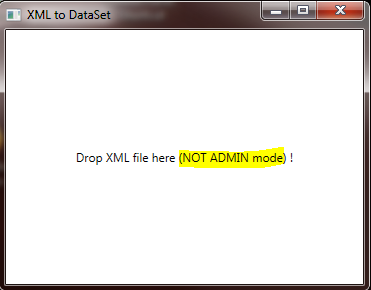
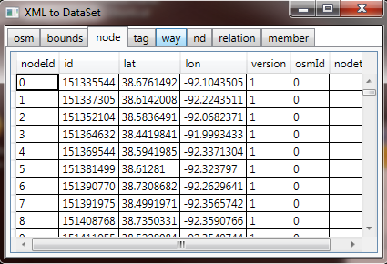

How much data we can keep in DataSet?
You need to analyze XML file, for example, OSM data (OpenStreetMap) .
When you start working with the big XML file, first question – can I read it iinto DataSet?
Building the Sample
When I started work with OSM map https://code.msdn.microsoft.com/windowsapps/XML-file-to-DataSet-How-4d91e8e9/https://www.openstreetmap.org/export#map=8/37.866/-92.361
I downloaded XML file about 2Gb.
I needed to load it into DataSet or DataBase …
I built this simple application to receiving an answer, is it possiable read it into DataSet?.
You can do yourself with this simple application.
Download sample, open with VisualStudio, build and Run (NOT ADMIN mode)
Simple answer we can read some megabyte file, maybe some hundreds megabytes file but it will be impossible read gigabytes file …
You need to load it directly into DataBase, but it will be a different story.
If you need to review extrimly BIG file you can use my working application located
here
Description


using System; using System.Collections.Generic; using System.Data; using System.IO; using System.Linq; using System.Text; using System.Threading.Tasks; using System.Windows; using System.Windows.Controls; using System.Windows.Data; using System.Windows.Documents; using System.Windows.Input; using System.Windows.Media; using System.Windows.Media.Imaging; using System.Windows.Navigation; using System.Windows.Shapes; namespace XMLtoDataSet { /// <summary> /// Interaction logic for MainWindow.xaml /// </summary> public partial class MainWindow : Window { public MainWindow() { InitializeComponent(); } private DataSet dS = new DataSet(); private string strErr = ""; /// <summary> /// Open file and read to DataSet /// </summary> /// <param name="files"></param> /// <returns></returns> private string openFiles(String[] files) { if (files.Length == 0 || files.Length > 1) { return "Please Drop only one File !"; } //; FileInfo fileTmp = new FileInfo(files[0]); if (fileTmp.Extension.ToUpper() == ".XML") { Dispatcher.Invoke(new Action(() => { using (StreamReader sr = new StreamReader(files[0])) { try { dS.ReadXml(sr); } catch (Exception ex) { strErr = ex.Message; } } } )); } else { return "Please Drop Only XML file!"; } return strErr; } private string ShowResult() { if (dS.Tables.Count == 0) return "Zero tables"; grdResult.Children.Clear(); // Clear Previuse Result TabControl tc = new TabControl(); try { foreach (DataTable t in dS.Tables) { TabItem ti = new TabItem(); ti.Name = t.TableName; ti.Header = t.TableName; DataGrid dg = new DataGrid(); DataView dv = new DataView(t); dg.ItemsSource = dv; ti.Content = dg; tc.Items.Add(ti); } grdResult.Children.Add(tc); } catch (Exception ex) { return ex.Message; } return ""; } private void Grid_Drop(object sender, DragEventArgs e) { IDataObject data = e.Data; String[] files = (String[])data.GetData(DataFormats.FileDrop); strErr = ""; string str = openFiles(files); lblNotAdmin.Visibility = Visibility.Collapsed; if (str == "") { str = ShowResult(); } MessageBox.Show(str == "" ? "OK" : str); } } }
using System; using System.Collections.Generic; using System.Data; using System.IO; using System.Linq; using System.Text; using System.Threading.Tasks; using System.Windows; using System.Windows.Controls; using System.Windows.Data; using System.Windows.Documents; using System.Windows.Input; using System.Windows.Media; using System.Windows.Media.Imaging; using System.Windows.Navigation; using System.Windows.Shapes; namespace XMLtoDataSet { /// <summary> /// Interaction logic for MainWindow.xaml /// </summary> public partial class MainWindow : Window { public MainWindow() { InitializeComponent(); } private DataSet dS = new DataSet(); private string strErr = ""; /// <summary> /// Open file and read to DataSet /// </summary> /// <param name="files"></param> /// <returns></returns> private string openFiles(String[] files) { if (files.Length == 0 || files.Length > 1) { return "Please Drop only one File !"; } //; FileInfo fileTmp = new FileInfo(files[0]); if (fileTmp.Extension.ToUpper() == ".XML") { Dispatcher.Invoke(new Action(() => { using (StreamReader sr = new StreamReader(files[0])) { try { dS.ReadXml(sr); } catch (Exception ex) { strErr = ex.Message; } } } )); } else { return "Please Drop Only XML file!"; } return strErr; } private string ShowResult() { if (dS.Tables.Count == 0) return "Zero tables"; grdResult.Children.Clear(); // Clear Previuse Result TabControl tc = new TabControl(); try { foreach (DataTable t in dS.Tables) { TabItem ti = new TabItem(); ti.Name = t.TableName; ti.Header = t.TableName; DataGrid dg = new DataGrid(); DataView dv = new DataView(t); dg.ItemsSource = dv; ti.Content = dg; tc.Items.Add(ti); } grdResult.Children.Add(tc); } catch (Exception ex) { return ex.Message; } return ""; } private void Grid_Drop(object sender, DragEventArgs e) { IDataObject data = e.Data; String[] files = (String[])data.GetData(DataFormats.FileDrop); strErr = ""; string str = openFiles(files); lblNotAdmin.Visibility = Visibility.Collapsed; if (str == "") { str = ShowResult(); } MessageBox.Show(str == "" ? "OK" : str); } } }
OpenStreetMap, the project that creates and distributes free geographic data for the world. We started it because most maps you think of as free actually have legal or technical restrictions on their use, holding back people from using them in creative, productive, or unexpected ways.
For analiz big file you can use https://code.msdn.microsoft.com/windowsapps/XML-file-to-DataSet-How-4d91e8e9/https://code.msdn.microsoft.com/windowsapps/XML-file-to-DataSet-How-4d91e8e9/https://code.msdn.microsoft.com/windowsapps/Big-Huge-file-viewer-It-is-55bc7227